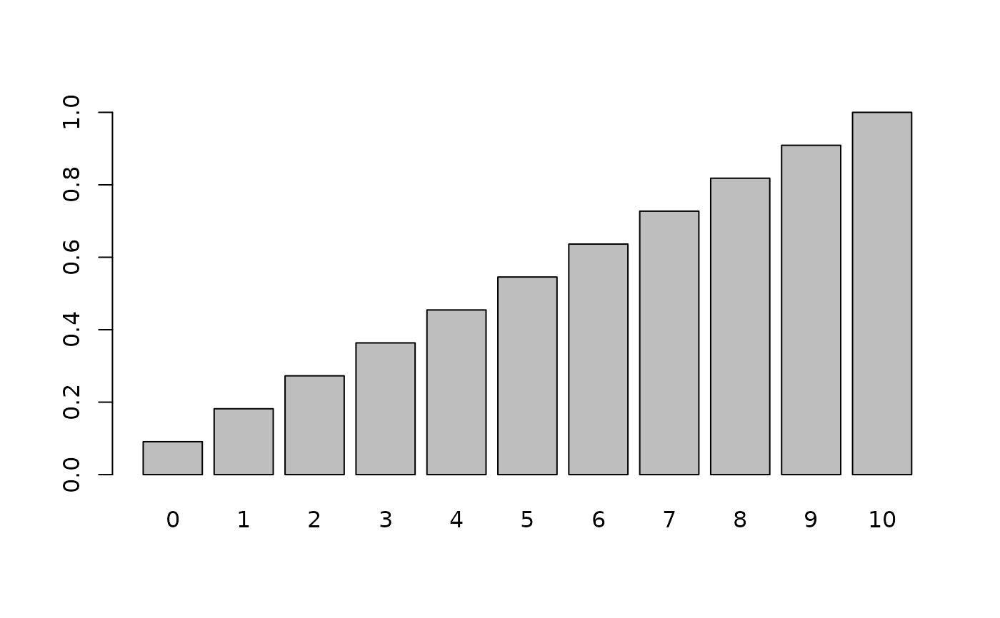
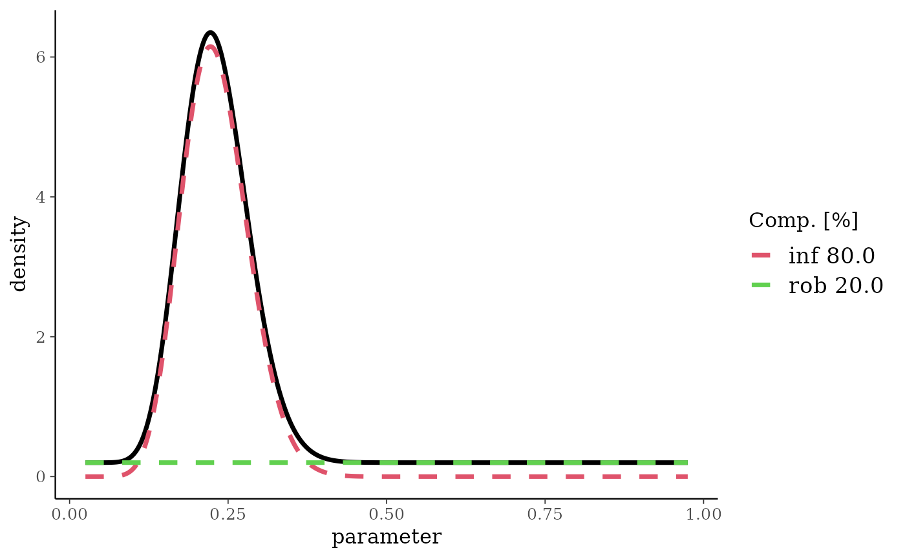
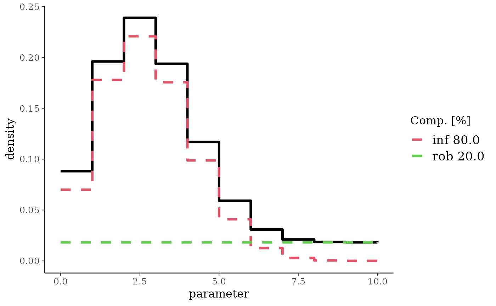
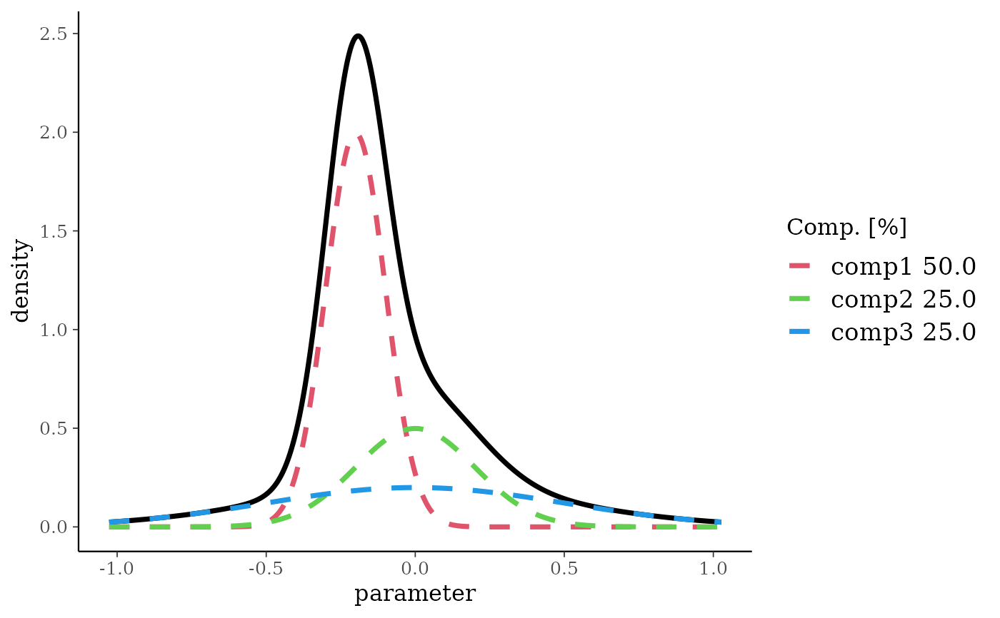
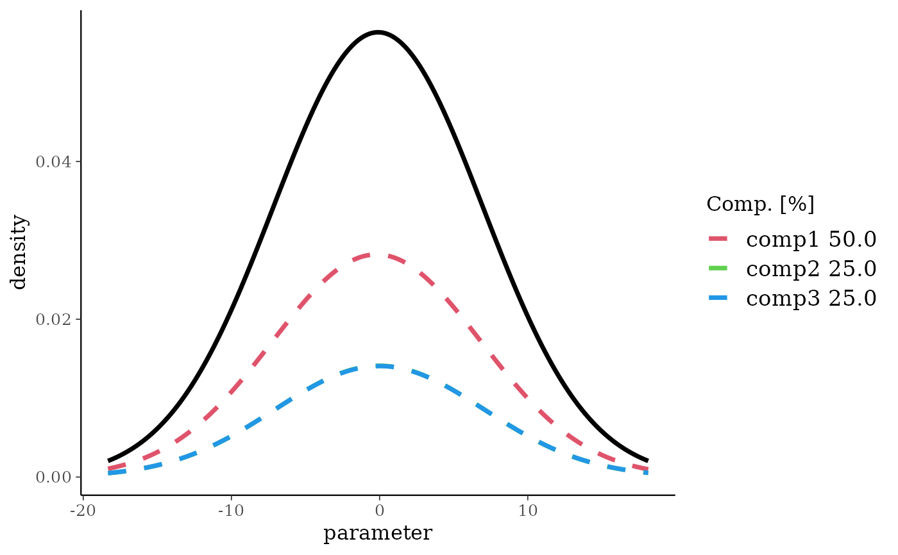
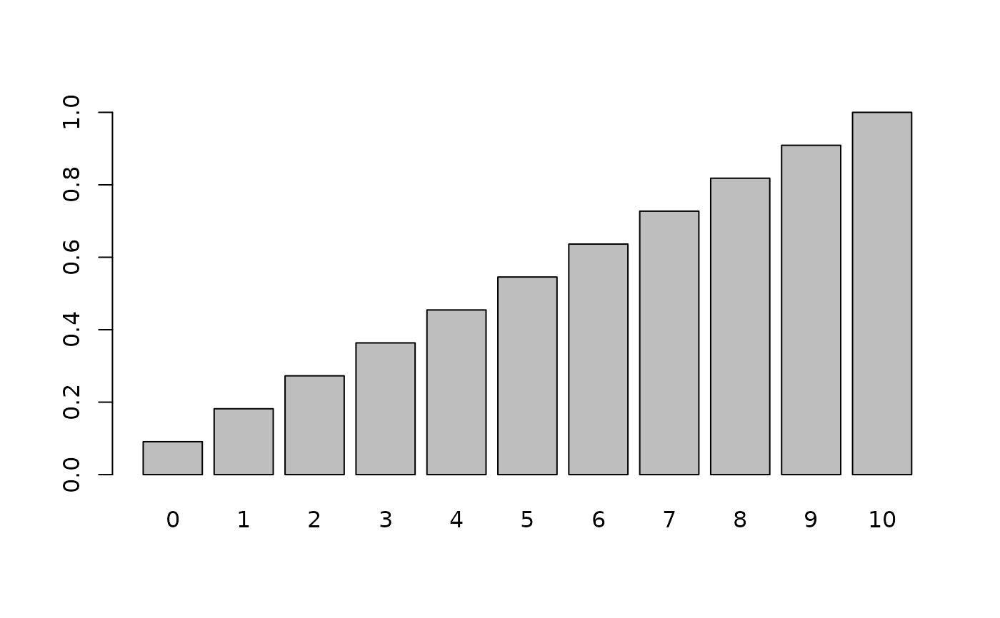
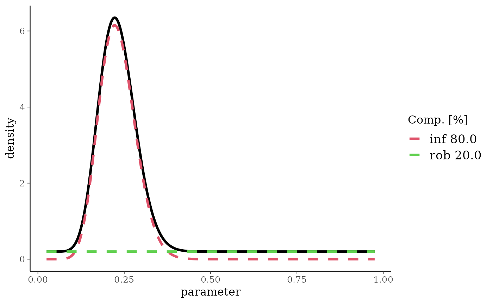
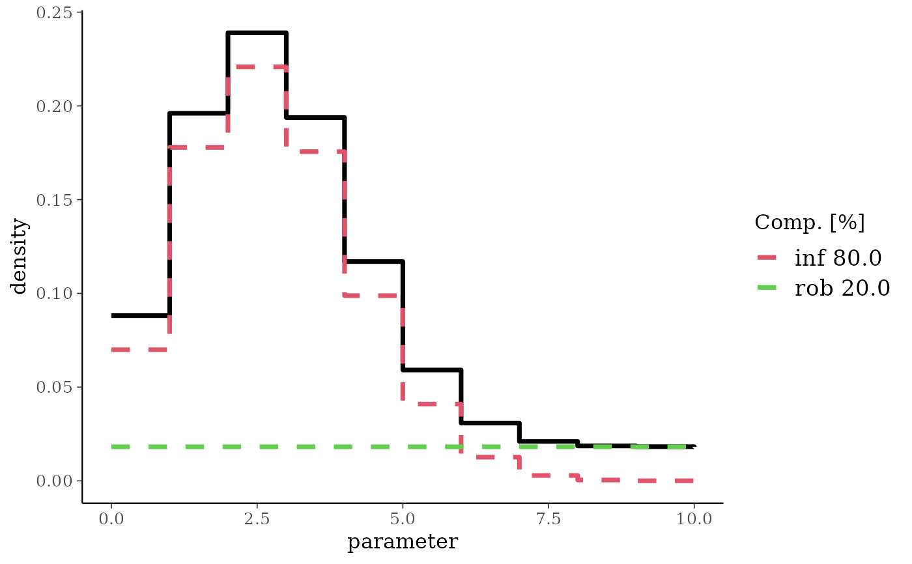
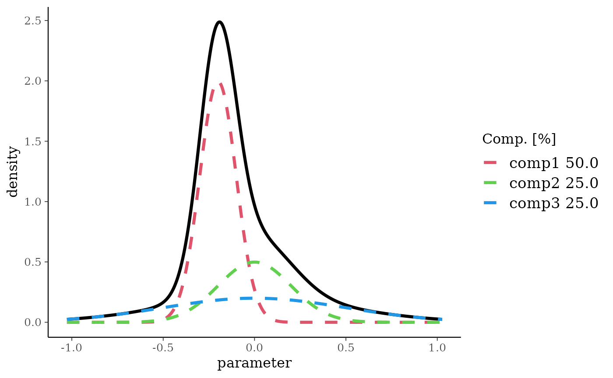
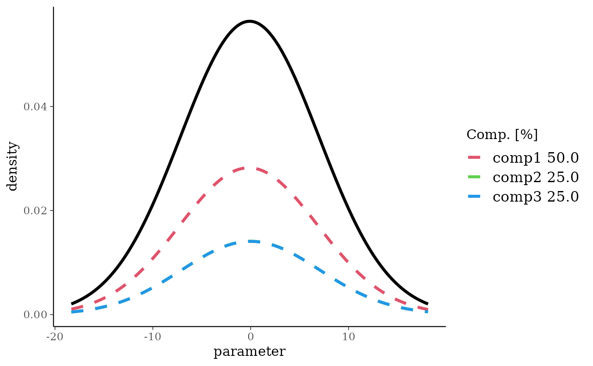

Predictive distribution for mixture of conjugate distributions (beta, normal, gamma).
Usage
preddist(mix, ...)
# S3 method for class 'betaMix'
preddist(mix, n = 1, ...)
# S3 method for class 'normMix'
preddist(mix, n = 1, sigma, ...)
# S3 method for class 'gammaMix'
preddist(mix, n = 1, ...)
# S3 method for class 'mvnormMix'
preddist(mix, ...)Value
The function returns for a normal, beta or gamma mixture the matching predictive distribution for \(y_n\).
Details
Given a mixture density (either a posterior or a prior)
$$p(\theta,\mathbf{w},\mathbf{a},\mathbf{b})$$
and a data likelihood of
$$y|\theta \sim f(y|\theta),$$
the predictive distribution of a one-dimensional summary \(y_n\) of $n$ future observations is distributed as
$$y_n \sim \int p(\theta,\mathbf{w},\mathbf{a},\mathbf{b}) \, f(y_n|\theta) \, d\theta .$$
This distribution is the marginal distribution of the data under the mixture density. For binary and Poisson data \(y_n = \sum_{i=1}^n y_i\) is the sum over future events. For normal data, it is the mean\(\bar{y}_n = 1/n \sum_{i=1}^n y_i\).
Methods (by class)
preddist(betaMix): Obtain the matching predictive distribution for a beta distribution, the BetaBinomial.preddist(normMix): Obtain the matching predictive distribution for a Normal with constant standard deviation. Note that the reference scale of the returned Normal mixture is meaningless as the individual components are updated appropriatley.preddist(gammaMix): Obtain the matching predictive distribution for a Gamma. Only Poisson likelihoods are supported.preddist(mvnormMix): Multivariate normal mixtures predictive densities are not (yet) supported.
Supported Conjugate Prior-Likelihood Pairs
| Prior/Posterior | Likelihood | Predictive | Summaries |
| Beta | Binomial | Beta-Binomial | n, r |
| Normal | Normal (fixed \(\sigma\)) | Normal | n, m, se |
| Gamma | Poisson | Gamma-Poisson | n, m |
| Gamma | Exponential | Gamma-Exp (not supported) | n, m |
Examples
# Example 1: predictive distribution from uniform prior.
bm <- mixbeta(c(1, 1, 1))
bmPred <- preddist(bm, n = 10)
# predictive proabilities and cumulative predictive probabilities
x <- 0:10
d <- dmix(bmPred, x)
names(d) <- x
barplot(d)
 cd <- pmix(bmPred, x)
names(cd) <- x
barplot(cd)

# median
mdn <- qmix(bmPred, 0.5)
mdn
#> [1] 5
# Example 2: 2-comp Beta mixture
bm <- mixbeta(inf = c(0.8, 15, 50), rob = c(0.2, 1, 1))
plot(bm)

bmPred <- preddist(bm, n = 10)
plot(bmPred)

mdn <- qmix(bmPred, 0.5)
mdn
#> [1] 2
d <- dmix(bmPred, x = 0:10)
# \donttest{
n.sim <- 100000
r <- rmix(bmPred, n.sim)
d
#> [1] 0.08814590 0.19605661 0.23899190 0.19379686 0.11696528 0.05913205
#> [7] 0.03082078 0.02104347 0.01863583 0.01822732 0.01818400
table(r) / n.sim
#> r
#> 0 1 2 3 4 5 6 7 8 9
#> 0.08968 0.19746 0.23763 0.19322 0.11681 0.05847 0.03068 0.02091 0.01858 0.01803
#> 10
#> 0.01853
# }
# Example 3: 3-comp Normal mixture
m3 <- mixnorm(c(0.50, -0.2, 0.1), c(0.25, 0, 0.2), c(0.25, 0, 0.5), sigma = 10)
print(m3)
#> Univariate normal mixture
#> Reference scale: 10
#> Mixture Components:
#> comp1 comp2 comp3
#> w 0.50 0.25 0.25
#> m -0.20 0.00 0.00
#> s 0.10 0.20 0.50
summary(m3)
#> mean sd 2.5% 50.0% 97.5%
#> -0.1000000 0.2958040 -0.6426984 -0.1490997 0.6426789
plot(m3)

predm3 <- preddist(m3, n = 2)
#> Using default mixture reference scale 10
plot(predm3)

print(predm3)
#> Univariate normal mixture
#> Reference scale: 10
#> Mixture Components:
#> comp1 comp2 comp3
#> w 0.500000 0.250000 0.250000
#> m -0.200000 0.000000 0.000000
#> s 7.071775 7.073896 7.088723
summary(predm3)
#> mean sd 2.5% 50.0% 97.5%
#> -0.1000000 7.0772523 -13.9709762 -0.1000673 13.7713589
cd <- pmix(bmPred, x)
names(cd) <- x
barplot(cd)

# median
mdn <- qmix(bmPred, 0.5)
mdn
#> [1] 5
# Example 2: 2-comp Beta mixture
bm <- mixbeta(inf = c(0.8, 15, 50), rob = c(0.2, 1, 1))
plot(bm)

bmPred <- preddist(bm, n = 10)
plot(bmPred)

mdn <- qmix(bmPred, 0.5)
mdn
#> [1] 2
d <- dmix(bmPred, x = 0:10)
# \donttest{
n.sim <- 100000
r <- rmix(bmPred, n.sim)
d
#> [1] 0.08814590 0.19605661 0.23899190 0.19379686 0.11696528 0.05913205
#> [7] 0.03082078 0.02104347 0.01863583 0.01822732 0.01818400
table(r) / n.sim
#> r
#> 0 1 2 3 4 5 6 7 8 9
#> 0.08968 0.19746 0.23763 0.19322 0.11681 0.05847 0.03068 0.02091 0.01858 0.01803
#> 10
#> 0.01853
# }
# Example 3: 3-comp Normal mixture
m3 <- mixnorm(c(0.50, -0.2, 0.1), c(0.25, 0, 0.2), c(0.25, 0, 0.5), sigma = 10)
print(m3)
#> Univariate normal mixture
#> Reference scale: 10
#> Mixture Components:
#> comp1 comp2 comp3
#> w 0.50 0.25 0.25
#> m -0.20 0.00 0.00
#> s 0.10 0.20 0.50
summary(m3)
#> mean sd 2.5% 50.0% 97.5%
#> -0.1000000 0.2958040 -0.6426984 -0.1490997 0.6426789
plot(m3)

predm3 <- preddist(m3, n = 2)
#> Using default mixture reference scale 10
plot(predm3)

print(predm3)
#> Univariate normal mixture
#> Reference scale: 10
#> Mixture Components:
#> comp1 comp2 comp3
#> w 0.500000 0.250000 0.250000
#> m -0.200000 0.000000 0.000000
#> s 7.071775 7.073896 7.088723
summary(predm3)
#> mean sd 2.5% 50.0% 97.5%
#> -0.1000000 7.0772523 -13.9709762 -0.1000673 13.7713589